Handloom worker housingTangail, Bangladesh
Simulation Workflows
Environmental simulation for the homes and workshops of handloom weavers, built in Grasshopper and tested one parameter at a time.
Three environmental parameters were optimized: wall material, daylight and airflow. Among mud, brick and corrugated iron, mud walls were chosen for their thermal performance. Skylights were introduced to reach 500 lux at the working plane, where the looms stand. Window size, location and spacing were then tuned with CFD so that air keeps moving through the rooms, holding 40 to 80% relative humidity by natural ventilation.
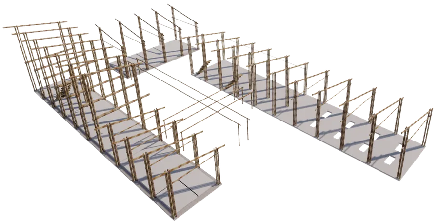
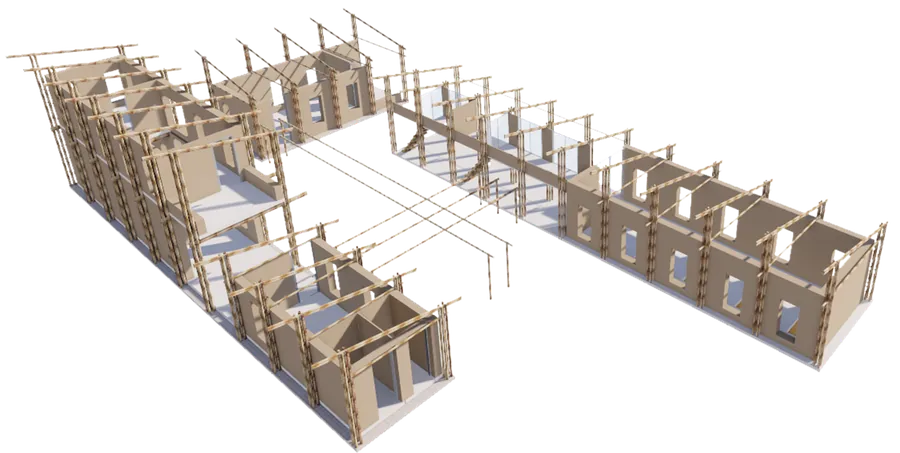
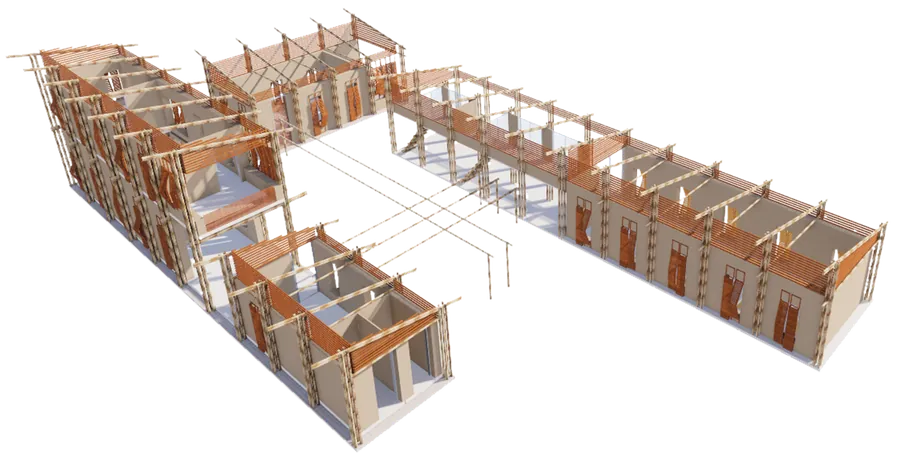
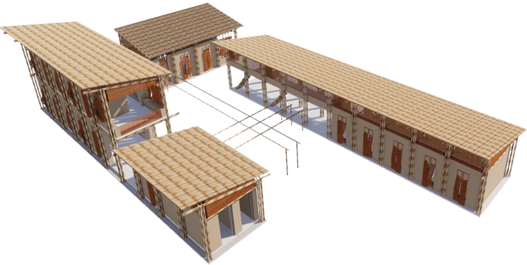
01Daylight
Light for weaving
Target: 500 lux at the working plane, without glare or direct sun on the looms
- Radiance
- ClimateStudio in Grasshopper
- HDRscope
- TT Toolbox and Design Explorer
- Octopus
The existing room was simulated at noon on the 21st of March, June, September and December, each under its typical sky. The illuminance grid (ClimateStudio and Radiance) shows how much light reaches the working plane; the false colour views and histograms (HDRscope) show where the eye meets bright openings, and the tone mapped views show how the room actually looks.
The annual metrics tell the rest: only 16.4% of the floor sits in the useful range, while direct sun overexposes 21.3% of it. An Octopus search over window, slat and skylight dimensions then found options that daylight the whole floor with no sunlit hot spots and almost no glare.
Existing, point in time
Noon on the 21st, one column per month; click a month to hold it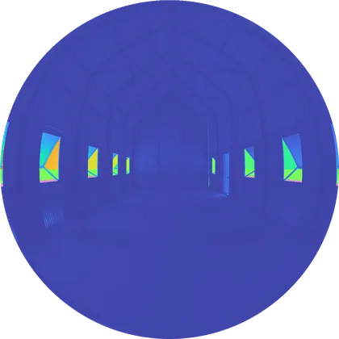
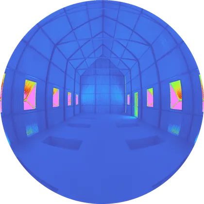
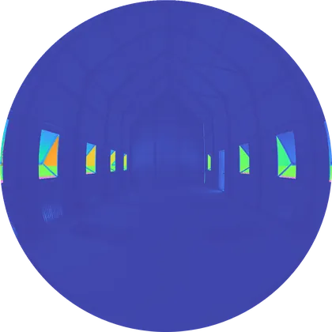
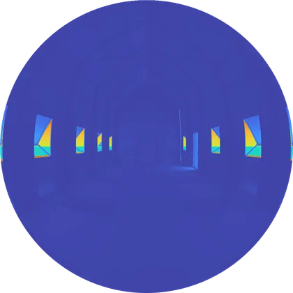
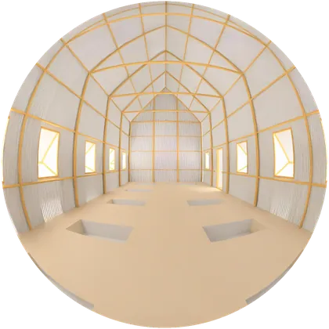
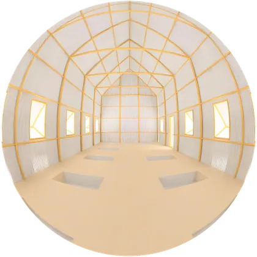
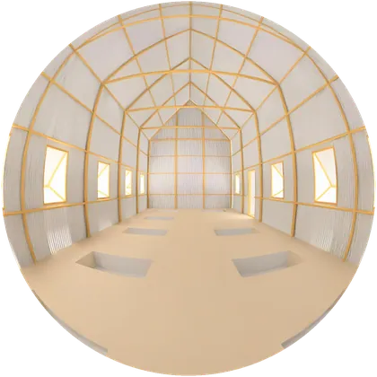
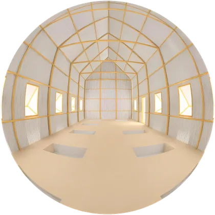
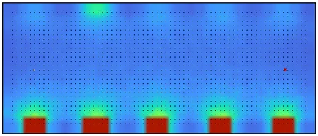
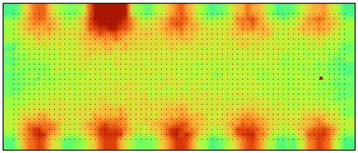
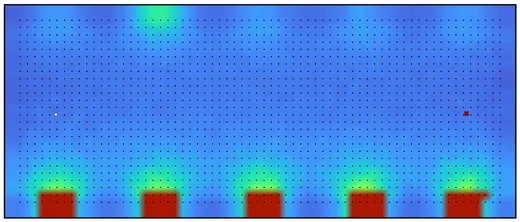
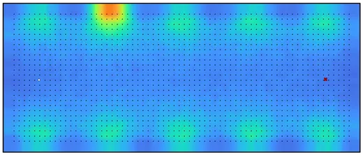
draft, read from the map
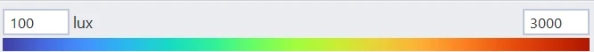
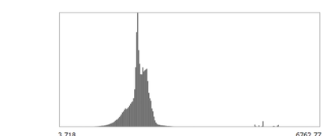
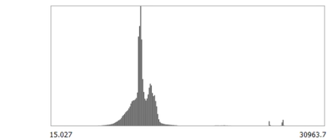
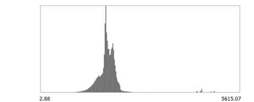
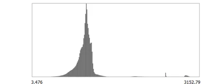
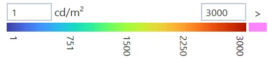
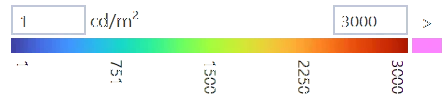
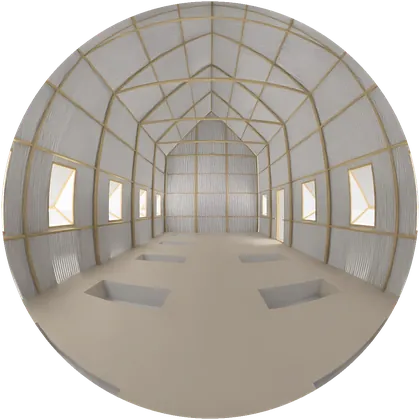
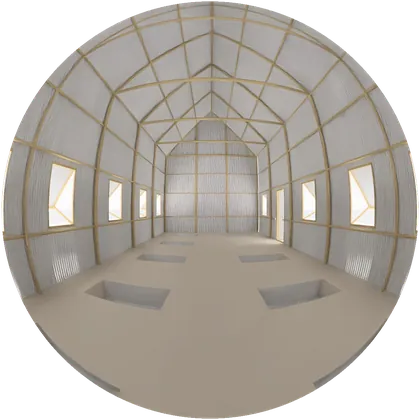
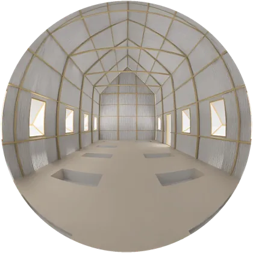
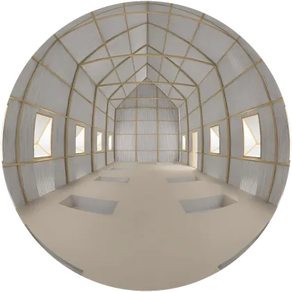
Annual, existing against optimized
Same plan, same scale in each column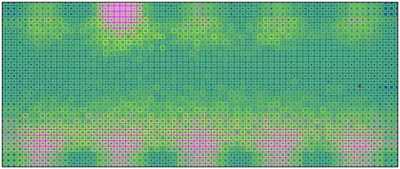
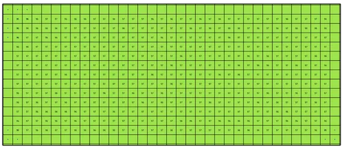
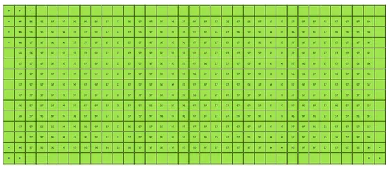
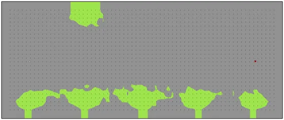
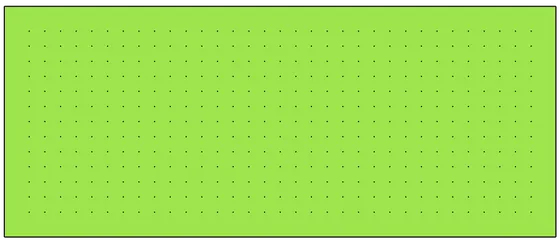
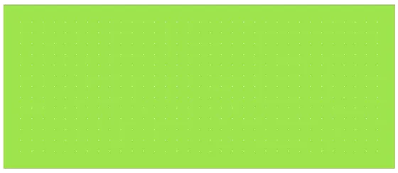
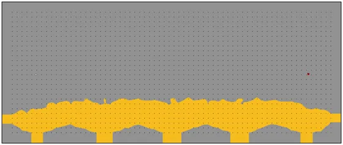
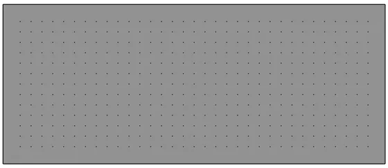
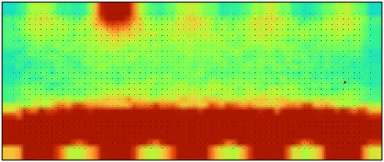
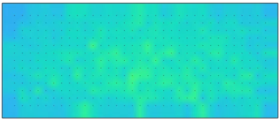
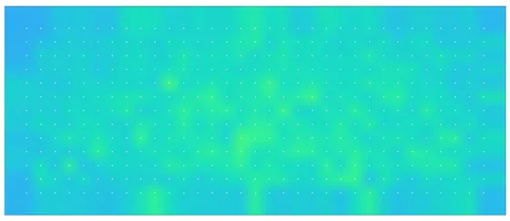
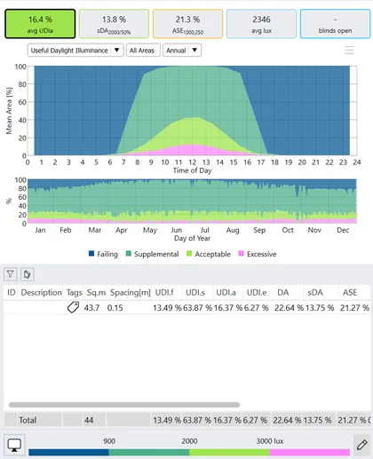
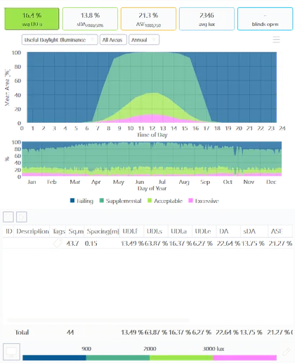
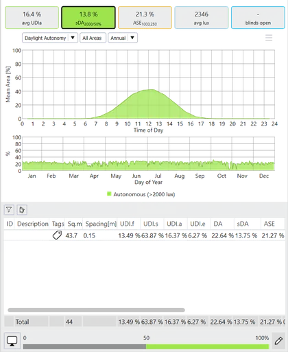
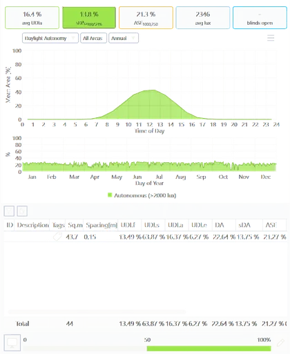
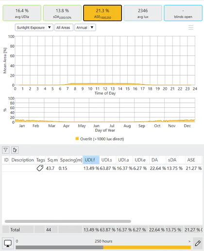
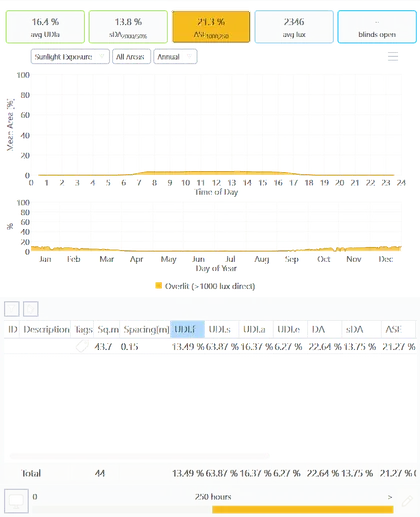
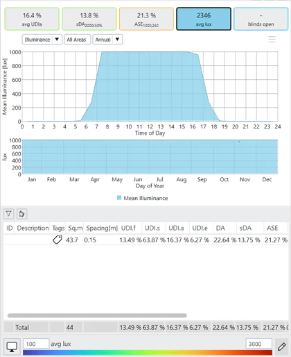
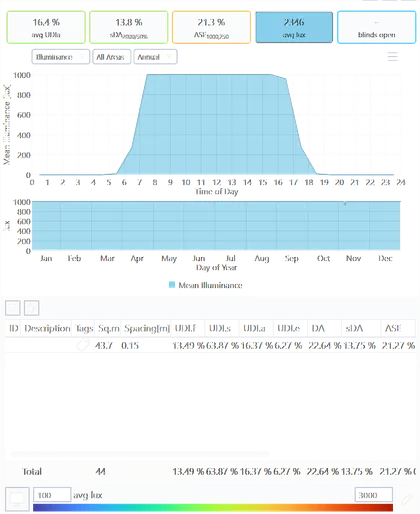
The search
6 genes, 3 objectives, population 100- Genes
- window width and length, number of slats, slat angle, skylight position and length
- Objectives
- maximize UDI, minimize spatial disturbing glare, maximize uniformity
- Tools
- ClimateStudio (Radiance) in Grasshopper for the metrics, Octopus for the search, TT Toolbox to export to Design Explorer
- Solver
- Octopus, HypE reduction and mutation, elitism 0.5, crossover 0.8, about 55 s per option
- window width about 0.9
- window length about 1.6
- slats 14
- slat angle about 65°
- skylight position 2.5
- skylight length about 1.1
- UDIa 0.98
- sDA 1.00
- ASE 0.00
- DGa about 0
- Emin/Eavg about 0.74
Values read from the Design Explorer selection.
02Wind
Air that keeps moving
Grasshopper and Butterfly (OpenFOAM): size, location and spacing of windows
The workflow was built with the Butterfly plugin to remove stagnant air from a handloom worker's home. Starting from the geometry and the wind input, the simulation used site data from Tangail to set the inlet and outlet pressure conditions.
Each iteration changed the size, location and spacing of the windows. The vector and pressure maps show the stagnant zones shrinking step by step, until the final configuration keeps air moving across every occupied zone: cross ventilation through the whole year, for comfort and a healthier room.
Six iterations
Vectors and pressure on the working plane, played together; click any iteration to hold itThe Butterfly script
Click the sheet to read it at full size# ventilation simulation, one iteration (pseudo code) geometry = rhino_model(walls, roof, windows) # 1 Grasshopper geometry inlet = wind_in(tangail_wind) # 2 wind in outlet = wind_out(pressure = 0) # 3 wind out model = butterfly.model(geometry, inlet, outlet, wall_boundary) # 4 mesh = block_mesh(model) + snappy_hex_mesh(refine_levels) # 5 grid = analysis_grid(working_plane, grid_size = 0.3) # 6 solution = parameters(turbulence, fv_schemes, relaxation) # 7 run butterfly.solve(model, mesh, solution, steady_state) # 8 vectors = probe(grid, "U") # 9 wind vectors pressure = color_map(probe(grid, "p"), unit = "Pa") # 10 colour mapping repeat change window size, location, spacing run again until no stagnant zone on the working plane # iteration 06
03Thermal
Thermal
In preparation
The thermal simulation of the mud wall house will be added here.